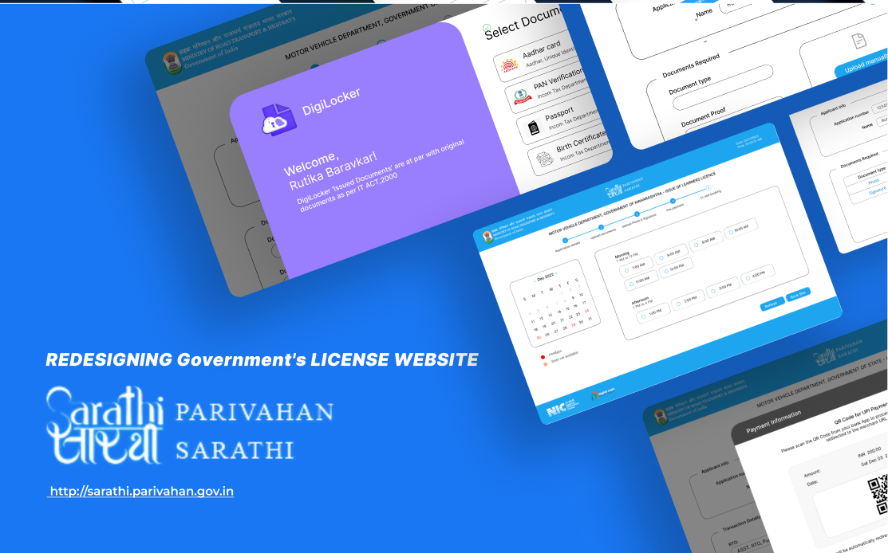
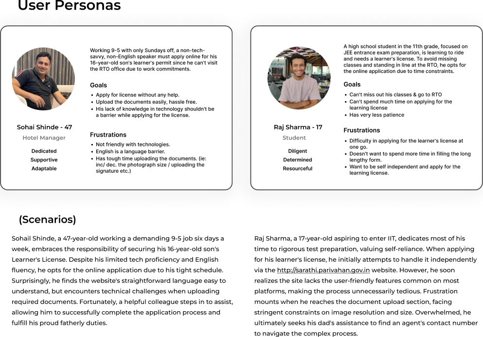
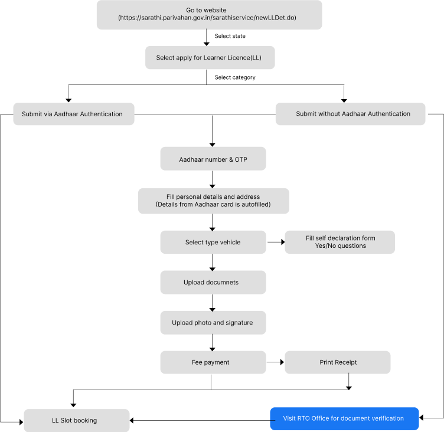
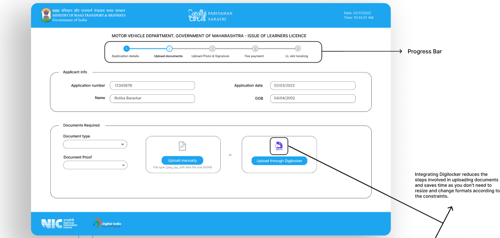
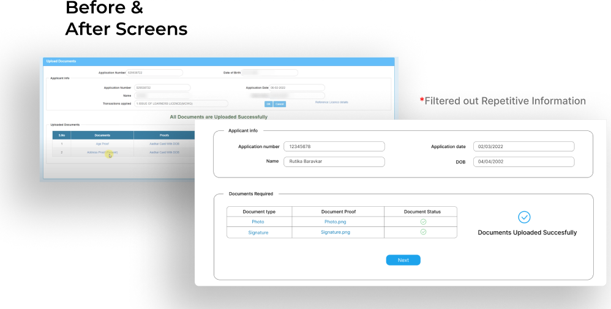
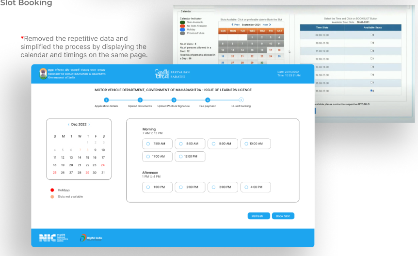
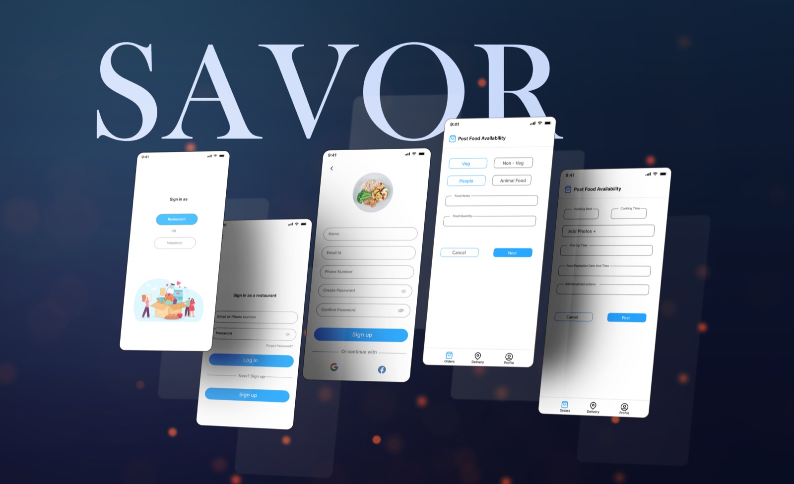

Context
Sarathi Parivahan is the unified online system run by India's Ministry of Road Transport and Highways for driving licenses and vehicle registration. Every learner's license in the country starts there. The portal was built around the department's process rather than the applicant's, and it shows: the form is long, the documents are hard to upload, and nothing tells you how far along you are.
The problem
The target user is anyone between 17 and 40 applying for a learner's license. In surveys and interviews, the same pain points came up again and again: difficulty uploading documents, too much text, clustered content with no hierarchy, having to hunt for the documents to upload, an overly complex slot booking step, buttons with no hierarchy, and no idea how many steps were left.
Two personas carried the research. Sohail Shinde, 47, a hotel manager with only Sundays off and limited English, applying online for his son's permit because he cannot visit the RTO. Raj Sharma, 17, a student preparing for entrance exams who cannot afford to miss classes to stand in line, and who ended up asking his father for an agent's number when the upload step defeated him.

The final problem statement: how might we make applying for a learner's license hassle free, so that the user does not get overwhelmed and can complete the process in one go.
Decisions
One flow instead of seven steps
I mapped the existing journey from the first click to the RTO visit, then removed the unnecessary hierarchy and prioritized the features that matched the problem statement. Applicants with Aadhaar get their personal details autofilled; everyone else follows the same path with one extra step.

Documents through DigiLocker, with a progress bar
Integrating DigiLocker means documents arrive in the right format without resizing, which was the single most common failure. A progress bar across the top shows the five stages and which one you are on.

Fewer fields on every screen
The original upload page repeated the applicant's details on every step. The redesign shows them once and reports each document's status in a small table.

Booking and payment without leaving the flow
Slot booking shows the calendar and the available timings on the same page instead of two, and the fee is paid with a UPI QR code inside the application rather than on a separate gateway. Buttons follow one hierarchy: a single primary action, a secondary, and a cancel.

Outcome
This was a redesign study rather than a shipped product, so the outcome is the design itself: seven steps became one guided flow, the two failure points from the interviews were removed, and every screen tells the applicant how far they have left to go.
What I would do next
Test the flow with people who match the two personas and time them against the live portal. The number that matters is how many finish in one sitting.
